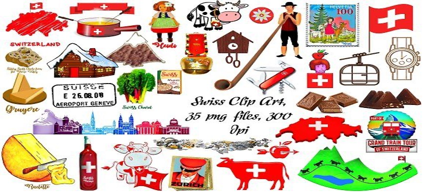
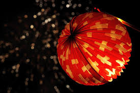
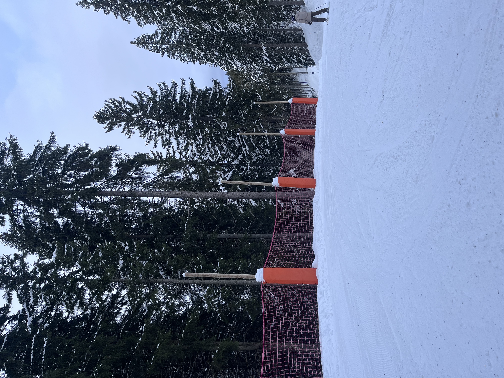

Switzerland is a country rich in tradition, colour, and community spirit, where every season brings a new celebration. From vibrant carnivals and medieval reenactments to Alpine festivals and music extravaganzas, Swiss cultural events showcase the country’s diverse regions, languages, and heritage. These celebrations are a perfect way to experience local customs, food, music, and folklore, making any visit truly unforgettable.

